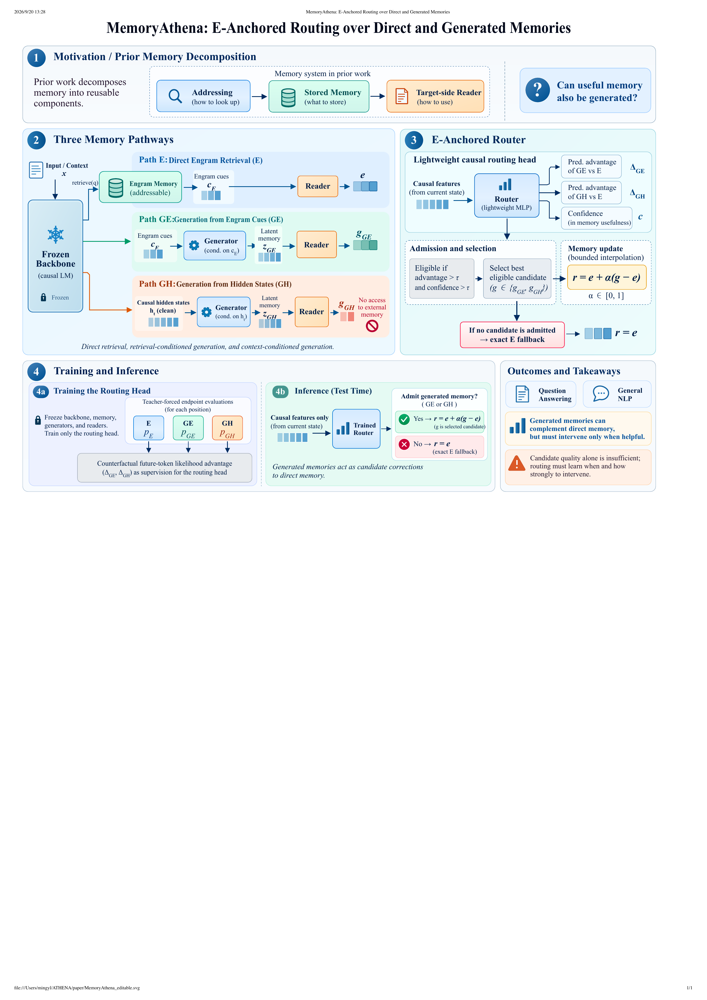

Direct Engram retrieval
The stable reference pathway. The retrieved memory is projected into the target backbone without requiring a generated candidate.
MemoryATHENA · research project
A reader-first memory interface that keeps direct Engram retrieval as a stable anchor and admits generated memory only when the router predicts that it will help.
Preprint · 2026 · single-seed artifact release

Abstract
External memory is useful, but a generated memory representation is not uniformly better than direct retrieval. MemoryATHENA separates memory storage from memory selection: it freezes the Engram memory and reader pathways, then trains a lightweight router from causal-text counterfactual advantages relative to E.
At inference time, the router can modify the direct path through bounded interpolation. If a generated candidate is not useful or confident enough, the system falls back exactly to E.
Method
The system turns one retrieved memory value into complementary reader views, then learns a compact E-relative decision rule over those views.
The stable reference pathway. The retrieved memory is projected into the target backbone without requiring a generated candidate.
A generator conditions on retrieved Engram representations to produce a target-side memory proposal.
A generator conditions on clean causal hidden states, providing a complementary proposal that does not directly consult the memory table.
Train from future-token likelihood advantages of GE and GH relative to E, not downstream task labels.
Admit a proposal only when its predicted advantage and confidence pass the configured rule; otherwise return to E.
Main results
Headline aggregates from the current paper-facing audit. Values are percentages and use one training seed (42). The tables keep protocol caveats visible instead of collapsing unlike baselines into one claim.
Open-domain QA cells are EM/F1; TruthfulQA cells are MC1/MC2/MC3/mean.
| Setting | NQ | WebQA | TriviaQA | TruthfulQA | HotpotQA |
|---|---|---|---|---|---|
| Engram-only | 20.28/28.18 | 14.86/33.28 | 63.92/69.18 | 27.42/44.32/22.69/31.47 | 17.95/25.92 |
| E-only path | 20.20/28.28 | 14.96/33.35 | 64.05/69.34 | 26.93/44.18/22.64/31.25 | 18.19/26.04 |
| Three-source router | 22.72/33.02 | 17.86/34.60 | 62.78/70.68 | 28.15/44.04/23.02/31.74 | 15.62/26.34 |
| Mistral → Llama transfer | 20.37/29.98 | 18.06/36.40 | 60.35/67.39 | 27.78/41.57/21.87/30.41 | 16.00/25.17 |
The standalone Engram-only row and joint-checkpoint rows have different training histories; the transfer row is reported separately.
Accuracy (%). E/router rows use the next-token synonym-sum dCPMI protocol; the historical Vanilla row uses a different full-choice scorer.
| Method | SST2 | MR | CR | RT | AGN | Yahoo | Average |
|---|---|---|---|---|---|---|---|
| Vanilla Mistral · historical scorer | 81.08 | 75.60 | 74.00 | 74.67 | 73.24 | 55.03 | 72.27 |
| Engram-only | 84.17 | 81.00 | 82.40 | 82.36 | 72.93 | 57.51 | 76.73 |
| Three-source router · Yahoo τ=1.0 | 88.07 | 84.70 | 84.10 | 83.86 | 76.64 | 57.43 | 79.14 |
| Router reference · all τ=0 | 88.07 | 84.70 | 84.10 | 83.86 | 76.64 | 45.91 | 77.22 |
Yahoo τ=1.0 is a post-hoc test-set threshold sweep; the all-τ=0 row is retained as the default reference.
Key findings
GE and GH can complement direct retrieval, but neither uniformly dominates E. The router keeps the strong path available on inputs where generation would interfere.
A frozen memory becomes useful on a new backbone through a target-side reader aligned to that backbone, rather than through the table alone.
Vanilla NLP uses a historical scorer and Yahoo τ=1 is post-hoc selected. The release keeps both facts visible so the headline averages remain auditable.
Resources
The public release separates code, model artifacts, and compact experiment metadata. Large scratch paths and raw task data are intentionally not part of the web page.
@article{memoryathena2026,
title = {MemoryAthena: Adaptive Routing over Latent and Generated Memories},
year = {2026},
note = {Preprint}
}